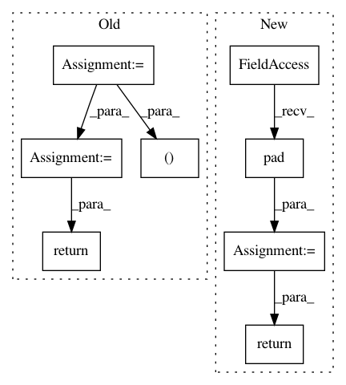

70e4d7fe60a9658bb27b9f5fb67592a1222b2ec3,spotlight/sequence/representations.py,CNNNet,user_representation,#CNNNet#Any#,114
Before Change
sequence_embeddings = self.item_embeddings(item_sequences)
(batch_size, seq_len, dim) = sequence_embeddings.size()
// Move embedding dimensions to channels and add a fourth dim.
sequence_embeddings = (sequence_embeddings
.permute(0, 2, 1)
.contiguous()
.view(batch_size, dim, seq_len, 1))
x = sequence_embeddings
for cnn_layer in self.cnn_layers:
x = cnn_layer(x)
user_representations = x.view(batch_size, dim, -1)
pooled_representations = (user_representations
.max(-1)[0]
.view(batch_size, dim))
return pooled_representations
def forward(self, user_representations, targets):
target_embedding = self.item_embeddings(targets)
After Change
for i, cnn_layer in enumerate(self.cnn_layers):
// Pad so that the CNN doesn"t have the future
// of the sequence in its receptive field.
x = F.pad(x, (0, 0, self.kernel_width - min(i, 1), 0))
x = F.relu(cnn_layer(x))
x = x.squeeze(3)
return x[:, :, :-1], x[:, :, -1]
def forward(self, user_representations, targets):
target_embedding = (self.item_embeddings(targets)
In pattern: SUPERPATTERN
Frequency: 4
Non-data size: 8
Instances
Project Name: maciejkula/spotlight
Commit Name: 70e4d7fe60a9658bb27b9f5fb67592a1222b2ec3
Time: 2017-07-06
Author: maciej.kula@gmail.com
File Name: spotlight/sequence/representations.py
Class Name: CNNNet
Method Name: user_representation
Project Name: pytorch/audio
Commit Name: 3bd4db86630b75bbbfb6c5c0a1a85603097bf9b2
Time: 2019-01-04
Author: david@da3.net
File Name: torchaudio/transforms.py
Class Name: SPECTROGRAM
Method Name: __call__
Project Name: pytorch/fairseq
Commit Name: 6e4b7e22eeb79f7e1c39d862f10ec3e61e51c979
Time: 2017-11-08
Author: myleott@fb.com
File Name: fairseq/models/fconv.py
Class Name: GradMultiply
Method Name: forward